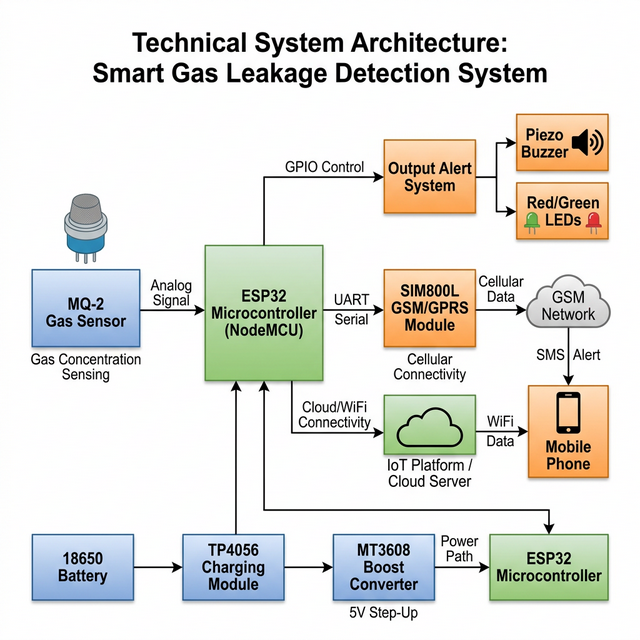
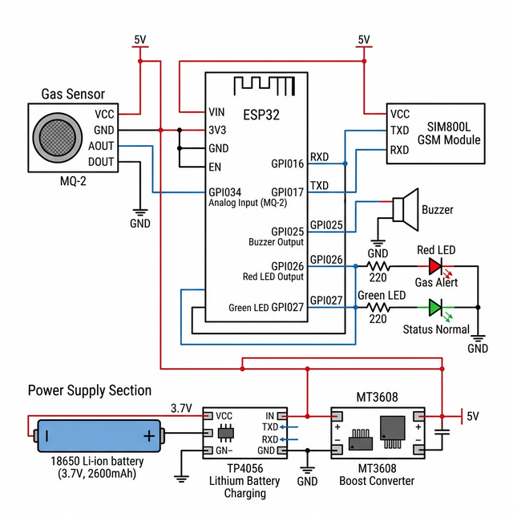
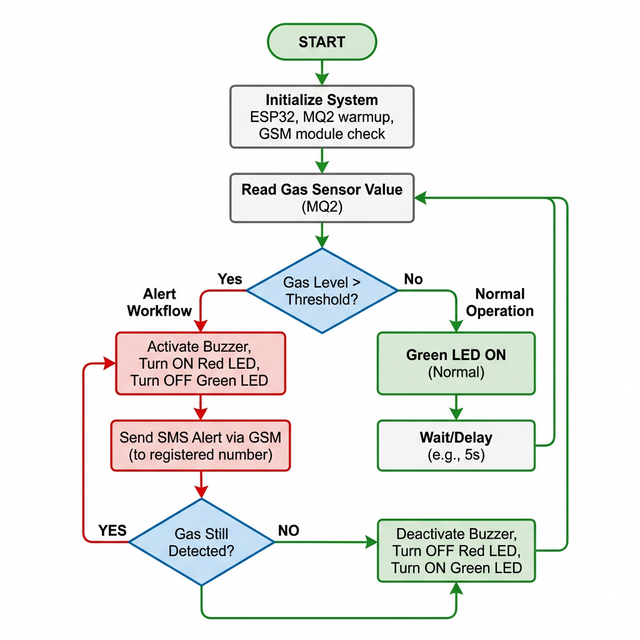

Smart Gas Leakage Detection & Alert System
An advanced IoT-based safety solution utilizing ESP32, MQ-2 Sensor, and GSM Communication to prevent domestic and industrial fire hazards.
Project Overview
The Smart Gas Leakage Detection and Alert System is a highly responsive safety device designed to detect the presence of dangerous gases, primarily LPG (Liquefied Petroleum Gas), natural gas, and smoke. Once a leak is detected, the system immediately alerts the inhabitants through a loud audible alarm and visual indicators.
To ensure maximum safety—even when users are away from the premises—the system integrates a GSM module (SIM800L) to instantly send an SMS alert to registered mobile numbers. Powered by an ESP32 microcontroller and backed by a rechargeable lithium-ion battery system, this IoT-ready framework offers an uninterrupted, affordable, and highly reliable layer of security against explosive gas leaks.
Problem Statement
LPG gas is widely used for residential cooking, industrial heating, and automotive fuel. Due to its highly flammable nature, even a minor, undetected leak can accumulate and lead to catastrophic explosions, resulting in severe loss of life, severe burns, and massive property destruction.
The Core Issue
Traditional methods of detecting gas leaks rely heavily on human olfactory senses (smelling the ethyl mercaptan added to LPG). However, leaks can occur when inhabitants are asleep, away from home, or in areas with poor ventilation where the smell isn't immediately noticeable.
The Gap
Most commercial gas detectors only provide a localized audio alarm. If the premises are empty, a local alarm is virtually useless. Furthermore, continuous power cuts in developing regions render standard wall-powered detectors inactive precisely when they are needed.
Proposed Solution
This project proposes an intelligent, self-powered, and dual-alerting gas detection system based on the ESP32 architecture.
The Core Innovations:
- Real-time localized detection: Using the highly sensitive MQ-2 gas sensor to continuously sample the air.
- Dual Alert Mechanism: Local alerts via a high-decibel Buzzer and Red LED, paired with remote SMS notifications via the SIM800L GSM Module.
- Acoustic Redundancy [NEW]: An LM393 Sound Sensor is incorporated to independently "listen" for the main buzzer. If it detects the loud alarm, it acts as a secondary trigger for mobile app notifications.
- Power Resilience: An integrated 18650 Li-ion battery managed by a TP4056 charging module ensures the system remains active 24/7, immune to power grid failures.
Complete System Architecture
The system architecture is divided into three primary blocks: Input (Sensing), Processing (Microcontroller), and Output (Alert mechanisms).

1. Data Flow & Processing
The MQ-2 sensor acts as the "nose" of the system. It outputs an analog voltage proportional to the gas concentration in the air. This analog signal is fed into the ESP32's ADC (Analog-to-Digital Converter), which continuously maps the voltage to a numeric value. If this value breaches predefined thresholds, the processing logic triggers the alert routines.
2. Communication Flow & Acoustic Redundancy
Upon detection, the ESP32 activates the local buzzer and communicates with the SIM800L module via UART to send an SMS. In parallel, an LM393 Sound Sensor listens for the buzzer's specific decibel level. If triggered, it acts as a secondary failsafe, signaling the ESP32 to push an instant alert directly to the IoT Mobile Application over WiFi.
Hardware Components
ESP32 Microcontroller
Role: The central brain of the system.
Why it is used: It features a fast 32-bit dual-core processor, multiple ADCs,
built-in WiFi/Bluetooth (allowing for future cloud upgrades), and low power consumption modes.
MQ-2 Gas Sensor
Role: Detects combustible gases.
Why it is used: Highly sensitive to LPG, Propane, Hydrogen, and Methane. It
provides a quick response time and is highly robust in varying environments.
LM393 Sound Sensor (Acoustic Trigger)
Role: Failsafe Secondary Detection.
Why it is used: It detects the loud noise generated by the primary buzzer. If
the main logic loop fails but the buzzer sounds, or if we want decoupled verification, the sound
sensor triggers the IoT app notification independently.
SIM800L GSM Module
Role: Cellular communication.
Why it is used: Allows the system to send SMS messages independently of WiFi
networks, ensuring alerts arrive even if home internet is down.
Power Management Subsystem
Role: Uninterrupted power supply.
Components: 18650 Battery, TP4056 Charger, MT3608 Boost Converter.
Why it is used: The battery provides raw power. TP4056 safely charges the cell
and prevents over-discharge. The MT3608 steps up the 3.7V battery voltage to a stable 5V
required by the sensors and GSM.
Alert Indicators
Role: Local notification.
Components: 5V Active Buzzer, Red/Green LEDs.
Why it is used: Provides immediate visual and loud audio feedback for people
currently inside the premises.
Component Cost Structure
This project is designed to be highly cost-effective, making it accessible for wide-scale deployment in lower-income demographics.
| Component | Quantity/Specs | Estimated Price (₹ INR) |
|---|---|---|
| ESP32 DevKit V1 | 1x 30-pin board | ₹300 |
| MQ-2 Gas Sensor Module | 1x Module | ₹120 |
| SIM800L GSM V2.0 | 1x with Antenna | ₹200 |
| Active Buzzer 5V | 1x Unit | ₹20 |
| LEDs & Resistors | 2x LEDs, 2x 330Ω | ₹10 |
| 18650 Li-ion Battery | 1x 2600mAh | ₹150 |
| TP4056 Charging Module | 1x with Protection | ₹40 |
| MT3608 Boost Converter | 1x Adjustable | ₹60 |
| Breadboard & Jumper Wires | 1x Set | ₹50 |
| LM393 Sound Sensor | 1x Module | ₹50 |
| Total Estimated Cost | Complete System | ₹1000 |
Circuit Connections

| Component Pin | ESP32 / Power Pin | Signal Type |
|---|---|---|
| MQ-2 VCC | Boost Converter 5V+ | Power Supply |
| MQ-2 GND | Common Ground | Ground |
| MQ-2 AOUT | ESP32 GPIO 34 (ADC) | Analog Input |
| SIM800L VCC | Boost Converter 5V+ | Power Supply |
| SIM800L GND | Common Ground | Ground |
| SIM800L TXD | ESP32 GPIO 16 (RX2) | Serial Data (UART) |
| SIM800L RXD | ESP32 GPIO 17 (TX2) | Serial Data (UART) |
| Buzzer (+) | ESP32 GPIO 25 | Digital Output |
| LM393 DOUT | ESP32 GPIO 35 | Digital Input (Sound Detect) |
| Red LED (+) | ESP32 GPIO 26 (via 330Ω) | Digital Output |
| Green LED (+) | ESP32 GPIO 27 (via 330Ω) | Digital Output |
| 18650 Battery (+/-) | TP4056 B+ / B- | Raw Power |
| TP4056 OUT+ / OUT- | MT3608 Boost IN+ / IN- | Protected 3.7V Power |
| MT3608 OUT+ / OUT- | ESP32 VIN / GND | Regulated 5V Power |
System Workflow Process
Initialization Sequence
Upon power-up, the ESP32 initializes all GPIO pins. The MQ-2 sensor requires a brief "warm-up" period (approx. 20-30 seconds) for the internal heater to reach optimal temperature. System flashes status LEDs to indicate bootup.
Continuous Monitoring Phase
The ESP32 continuously polls the analog pin connected to the MQ-2. The green LED remains solidly lit, indicating a safe environment. Data is averaged over short intervals to prevent false positives from brief signal spikes.
Threshold Breach Detection
If the gas concentration (reflected in the ADC value) crosses the pre-programmed empirical threshold, the system immediately shifts into the ALARM state.
Alert Execution
The green LED extinguishes. The Red LED turn ON and the Buzzer emits a continuous, high-pitched alarm. Simultaneously, the ESP32 triggers the AT command sequence to the SIM800L.
Remote Notification (SMS + App)
The SIM800L dispatches an SMS message. Simultaneously, the LM393 Sound Sensor picks up the loud decibels from the active buzzer. This acoustic trigger signals the ESP32 to fire a high-priority "Leak Detected!" Push Notification to the accompanying IoT Mobile App over WiFi.
System Logic Flowchart
The flowchart below outlines the software execution cycle running on the ESP32 microcontroller.

Working Principle of MQ-2 Sensor
The MQ-2 is a Metal Oxide Semiconductor (MOS) type gas sensor. Its core functional component is a micro AL₂O₃ ceramic tube covered by a sensitive layer of Tin Dioxide (SnO₂).
The Chemical Process:
In clean air, oxygen from the atmosphere adsorbs onto the SnO₂ surface. This traps electrons in the semiconductor, resulting in a high electrical resistance.
When reducing combustible gases (like LPG or Methane) enter the sensor chamber, they react with the adsorbed oxygen. This chemical reaction releases the previously trapped electrons back into the semiconductor material. Consequently, the electrical resistance drops sharply.
The varying resistance alters the voltage drop across an internal load resistor, which the ESP32 reads as a changing analog voltage level (0 to 5V → mapped to 0-4095 digitally on the ESP32).
Deployment Locations
Domestic Kitchens
Near LPG cylinder setups and stoves. Prevents overnight leaks from turning fatal.
Restaurants
Commercial kitchens utilizing massive commercial gas pipelines and large cylinders.
Chemical Labs
University and industrial laboratories utilizing bunsen burners and piped gas grids.
Industrial Storage
Warehouses storing volatile chemicals or gas canisters where human monitoring is minimal.
Installation Guidelines
- Density Considerations: LPG is heavier than air. Therefore, the sensor should be installed approximately 30 cm (1 ft) above the floor level for LPG setups. Conversely, for natural gas (Methane), which is lighter than air, the unit should be installed 30 cm below the ceiling.
- Proximity: The device should be placed within 1 to 2 meters horizontally from the suspected leakage source (e.g., the gas cylinder valve or stove connection).
- Avoid Dead Air Spaces: Do not install behind curtains, inside enclosed cabinets, or near excessive drafts (windows/exhaust fans) that could blow gas away from the sensor.
- GSM Network: A location must be selected where the SIM800L receives an adequate cellular signal strength for reliable message delivery.
Safety Precautions
Installation Hazards
Ensure the system is not placed directly over an open flame, as extreme temperatures will damage the sensor housing and wiring.
Battery Care
Li-ion batteries must be correctly integrated with the TP4056 protection module. A short circuit or overcharging (bypassing the TP4056) poses a serious fire risk in itself.
Water Exposure
The MQ-2 has an open mesh net. Exposure to steam, frying oil splashes, or water mist can permanently clog the sensitive layer.
Periodic Testing
System should be tested monthly using a safe, unlit butane lighter to verify sensor responsiveness and GSM messaging functionality.
Practical Applications
Beyond simple residential use, this technology scales effectively for various applications:
- Smart Home Integration: Forming the baseline security layer for modern smart home automation systems.
- Automotive Security: RVs, caravans, and food trucks that carry localized propane tanks.
- Mining Safety: Can be adapted to detect dangerous methane pockets in underground mining environments.
- Server Room Monitoring: In combination with smoke detection functionality (as MQ-2 detects smoke) to protect vital IT infrastructure.
Future Improvements & Scope
Phase 2 Architecture Upgrades:
1. IoT Dashboard: Utilizing the ESP32's native WiFi to send live ppm (parts per million) data to cloud services like Blynk, ThingSpeak, or AWS IoT for graphical tracking and data logging.
2. Automated Mitigation: Interfacing the ESP32 with an electromechanical solenoid valve. Upon leak detection, the system physically cuts off the primary gas supply line, directly neutralizing the threat.
3. Exhaust Automation: Automatically triggering a heavy-duty exhaust fan to safely extract explosive gas mixtures outside the building.
Advantages
- Highly Cost Effective (Under ₹1000 INR).
- 24/7 Redundancy: Operates completely independent of the main power grid.
- Dual Notification: Informs both local occupants and absent owners.
- Rapid Response: Detects leaks long before they reach lower explosive limits (LEL).
- Compact: Small physical footprint, easily hidden.
Limitations
- Network Dependency: SMS functionality requires an active cellular 2G/GSM network.
- Cross-Sensitivity: MQ-2 is non-specific; heavy cooking smoke or strong alcohol vapors may trigger false alarms.
- Calibration: Requires careful analog calibration for specific environmental baselines.
- Lifespan: Chemical sensors slowly degrade and must be replaced every 3-5 years.
Conclusion
The Smart Gas Leakage Detection and Alert System presents a robust, scalable, and economical solution to a critical household and industrial safety problem. By synergistically combining the analog sensing capabilities of the MQ-2, the processing power of the ESP32, and the ubiquitous reach of GSM networks, this project successfully bridges the gap between basic commercial detectors and high-end industrial systems. Its adoption has the definitive potential to drastically mitigate the risks of gas-induced explosions, prioritizing human safety and property security.
Interactive IoT Mobile Dashboard
Test the acoustic redundancy feature! The interactive dashboard below simulates the functional companion mobile app. Use the control panel to trigger hardware events and watch the app respond in real-time.
Home Safety
🔋 84%Alerts auto-send when buzzer sounds
Recent Alerts
- [System] Online and monitoring.
Gas Detection Monitor
Real-time gas level monitoring with automatic alerts.
🎤 Voice Alert System
Enable voice notifications - speaks emergency alerts when buzzer is detected